| Task | Waiter | Manager | Owner |
|---|---|---|---|
| Take table orders, sections, voice search, send to kitchen | ✓ | ✓ | ✓ |
| Parcels, print bill, take payment (Cash/UPI/Card/Split) | ✓ | ✓ | |
| Bills and Analytics (in Settings), rooms | ✓ | ✓ | |
| Edit or delete a paid bill | ✓ | ||
| Menu, tables, GST, staff logins, bill details | ✓ |
The bottom bar shows only what each person can use: waiters see Tables and Settings; owners also see Menu. Lodge hotels also see Rooms.
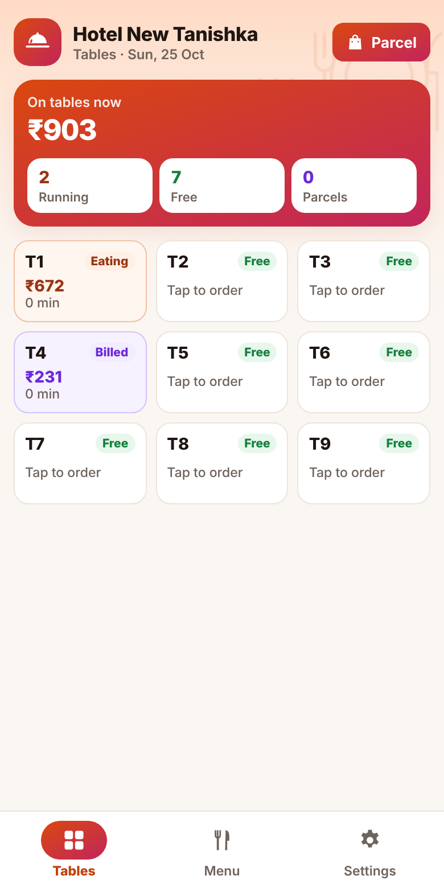
The orange card shows money on tables now, and how many tables are running, free, and parcels.
Pull the screen down to refresh. Orders from other phones appear by themselves.
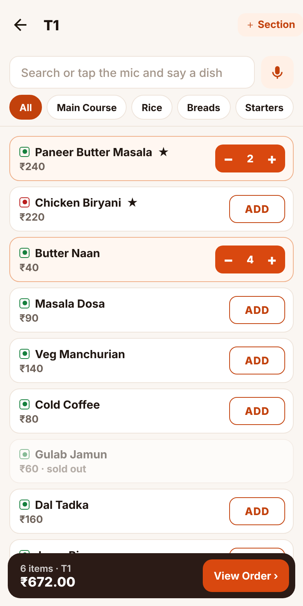
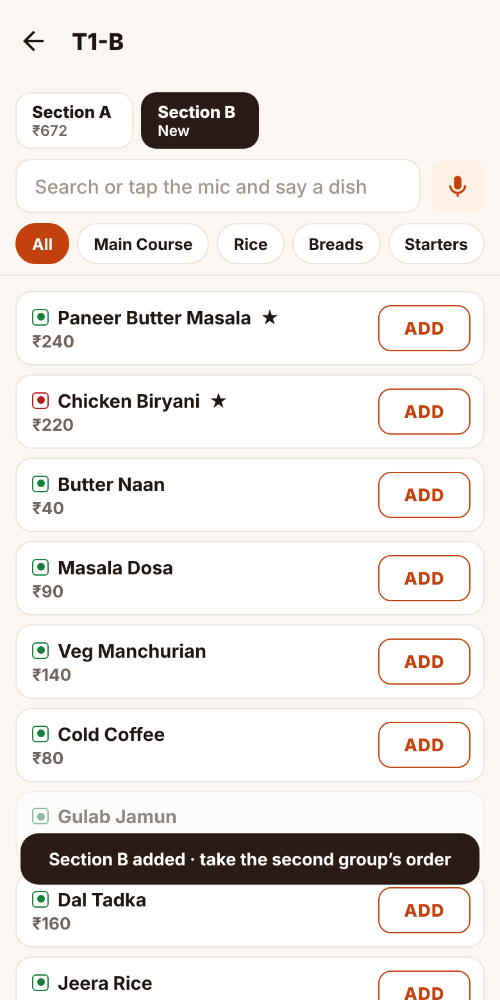
When two different groups sit at the same table, each can have its own bill.
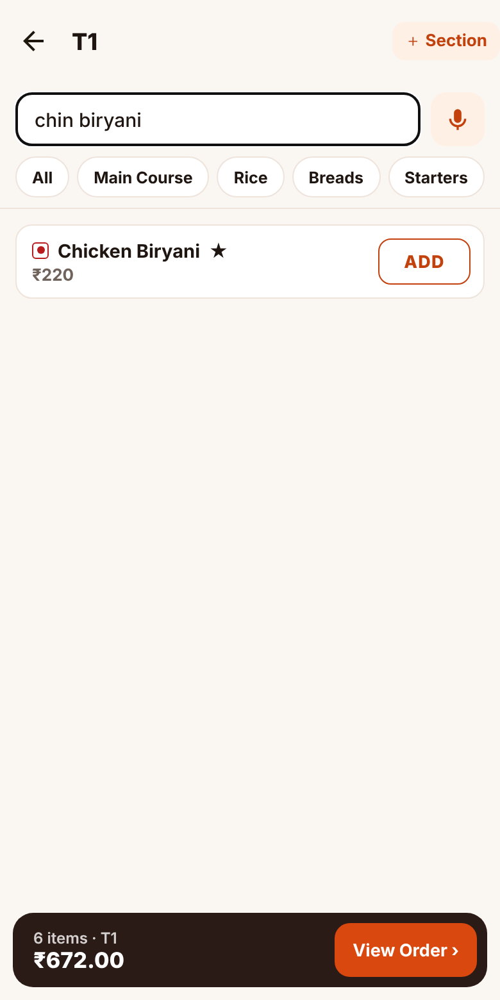
It understands short or Indian spellings: “chin biryani” finds Chicken Biryani, “pav baji” finds Pav Bhaji. Turn it on or off in Settings → Printer & this phone → Voice search.
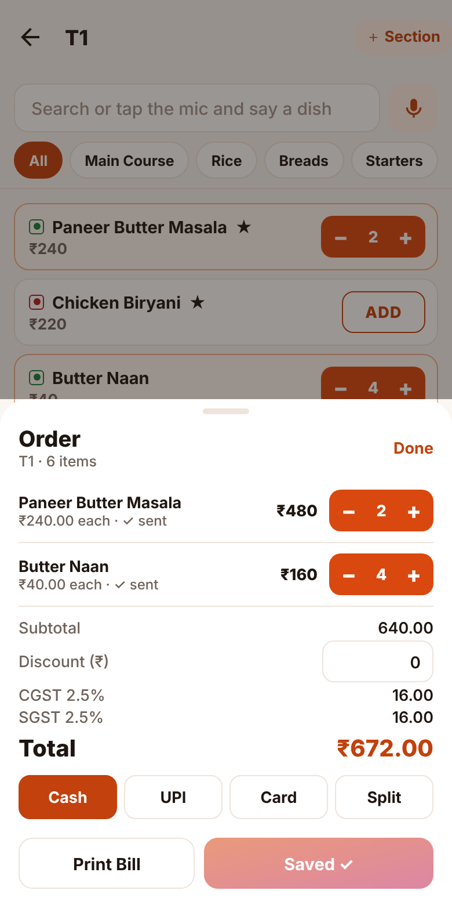
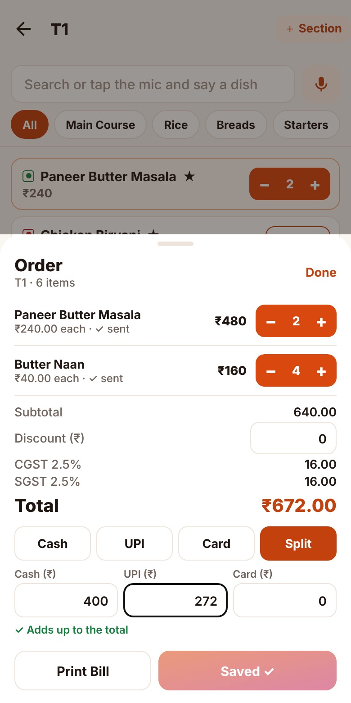
Only when the owner turns on Kitchen tickets (KOT) for tables in Settings. Then the order sheet shows Send to Kitchen: it prints only the dishes added or cancelled since the last ticket, with the table in big letters. Without this setting there is no kitchen ticket for tables.
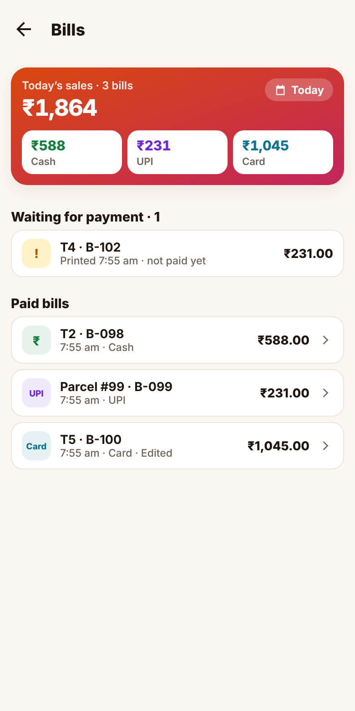
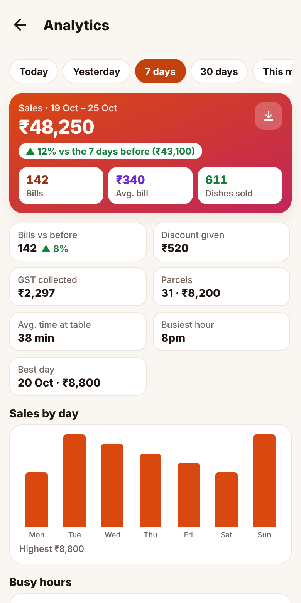
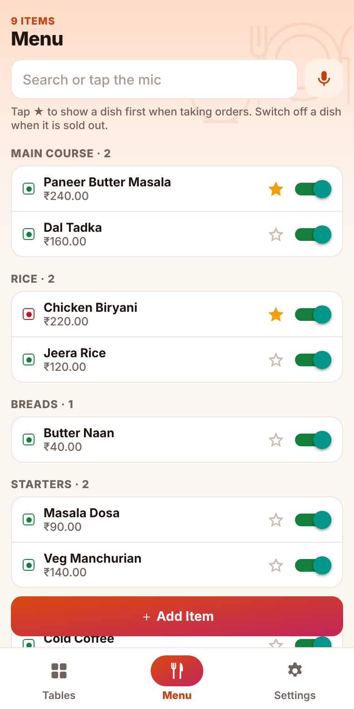
Tables already running keep the old price; new orders use the new one. Other phones get menu changes when they next open the app.
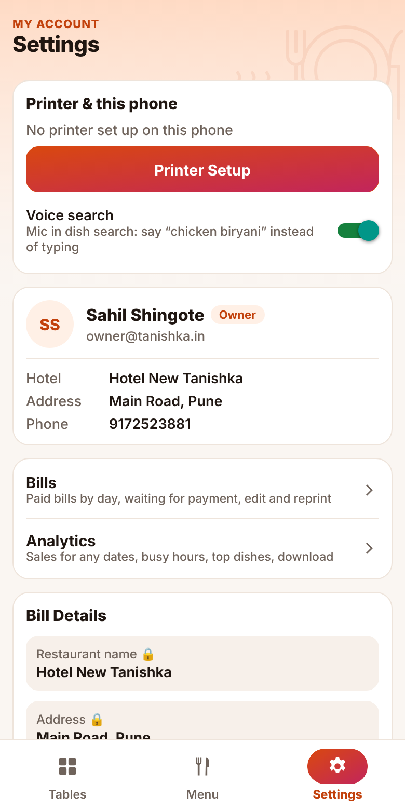
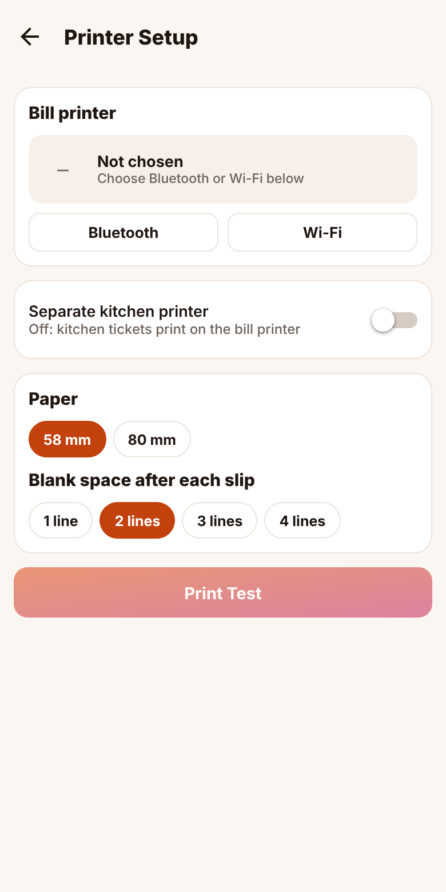
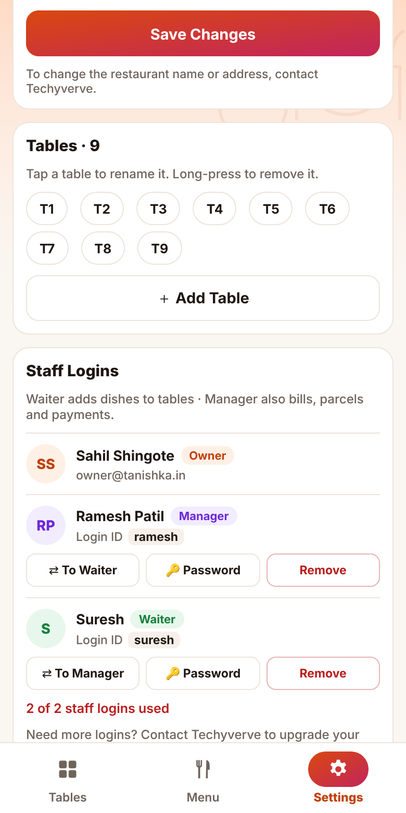
Tap a table to rename it, long-press to remove it, ＋ Add Table for a new one.
| Problem | What to do |
|---|---|
| “No internet” message | Keep taking orders: they stay on the phone and save when the internet is back. |
| Printer does not print | Check it is on, has paper and is near the phone. Settings → Printer Setup → Print Test. For Wi-Fi, the phone must be on the same Wi-Fi. |
| Bill prints cut or broken | Print Test again; if still wrong, send a photo of the slip to Techyverve. |
| Voice search does not hear | Allow the microphone for Master Bill in phone settings; speak close to the phone. |
| “No access yet” | Ask the owner to add you in Settings → Staff Logins. |
| “Service paused” | Contact Techyverve. Your bills and menu are safe. |
Techyverve Solution Limited · 91725 23881 · 72761 56939 · www.techyverve.in